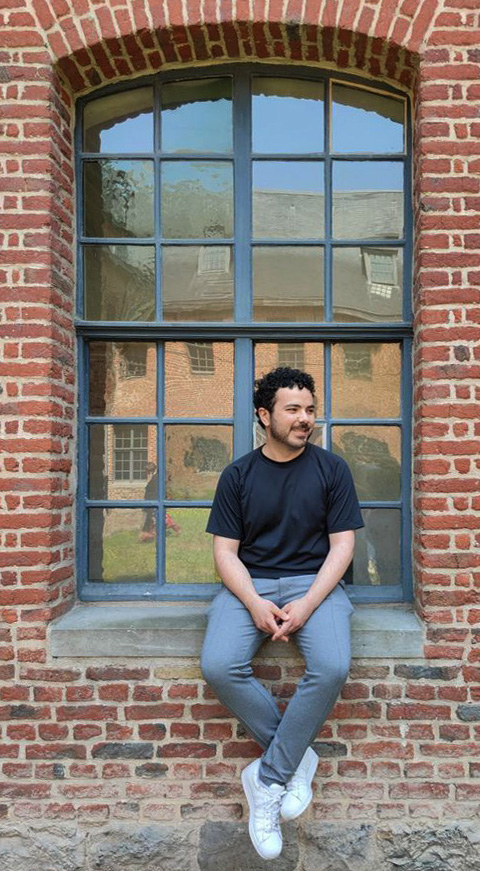

Bonjour,
Je m’appelle Charbel.
Je suis un artiste travaillant dans le numérique, formé en graphisme, photographie numérique, conservation préventive et recherche artistique.

Photo portrait prise par Pénélope Limoges, 2023.
En collaborant avec des artistes et des institutions, j’ai occupé plusieurs rôles jusque-là incluant enseignant, manager, documentaliste multimédia, retoucheur photo et graphiste.
Je suis actuellement basé en France, et je suis activement en recherche d’emploi dans les domaines mentionnés ci-dessus.